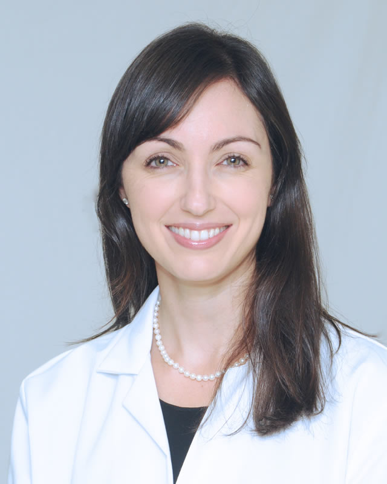
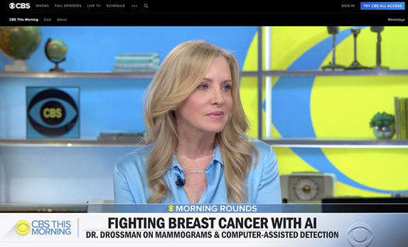
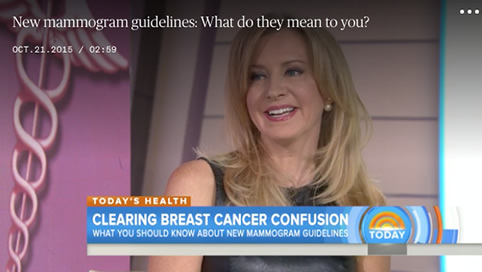

News and Media
October is Breast Cancer Awareness Month
Breast cancer awareness is an effort to raise awareness and reduce the stigma of breast cancer through education on symptoms and treatment. The pink ribbon is the most prominent symbol of breast cancer awareness, and in many countries the month of October is National Breast Cancer Awareness Month.
Schedule Your Mammogram Today!
Welcome Dr. Keren Tuvia Baron to Schonholz, and Drossman
Dr. Baron has many years of experience in private practice devoted to Women’s Imaging, which encompasses both breast and pelvic imaging. She interprets all breast imaging studies including 2D and 3D mammography/tomosynthesis, breast ultrasound, and breast MRI. She is an experienced interventionalist, routinely performing stereotactic, ultrasound, and MR guided breast biopsies. Dr. Baron also interprets pelvic sonography, and has published articles on imaging of infertility treatment complications, and on abdominal pain in pregnancy.
Coronavirus COVID-19 Update March 23rd, 2020
Out of an abundance of caution from the COVID-19 virus situation and for the safety of our patients and staff, our office is currently closed. We are in the process of calling all patients with appointments. One of our team members will contact you to reschedule. If you need to reach us, please use the Appointments or Medical Records links in the Contact Us section of our website and we will call you and/or email you promptly regarding your request. We appreciate your patience and cooperation.
For more information please visit the CDC, Click Here
Dr. Susan Drossman - In The News on CBS This Morning
February 17th, 2020
Dr. Susan Drossman on Mammograms and computed detection. Artifical Intelligence aims to improve Breast Cancer Diagnosis.
Watch Full CBS Video with Dr. Drossman
'The View' lifestyle expert Gretta Monahan opens up about being diagnosed with breast cancer
Published Monday October 18th, 2019
During an appearance on "The View" Friday, Gretta Monahan, the show's lifestyle expert, said it was "the first time" that she had "said that out loud." Monahan said that she'd chosen to share her cancer experience on national television in an effort to encourage women to remind each other to take five minutes to give themselves breast self-examinations and see their doctors for annual screenings. Dr. Susan Drossman mentioned in Gretta Monahan's instragram post about her diagnosis.
Read Full Post About Gretta Monahan's Diagnosis
Why did Joan Lunden get a breast ultrasound... and should you get one?
 When Joan, who was diagnosed with an aggressive type of breast cancer, revealed her disease was detected through a breast ultrasound after she’d received a "normal" mammogram, some questioned why she had the second screening. If the mammogram missed Lunden’s cancer, should all women get a breast ultrasound?
When Joan, who was diagnosed with an aggressive type of breast cancer, revealed her disease was detected through a breast ultrasound after she’d received a "normal" mammogram, some questioned why she had the second screening. If the mammogram missed Lunden’s cancer, should all women get a breast ultrasound?
New York diagnostic radiologist Dr. Susan Drossman, who joined Joan in the Orange Room Friday, explains.
 Why did Joan Lunden get a breast ultrasound?
Why did Joan Lunden get a breast ultrasound?
Mammography is currently the best screening tool available. However, mammography does not do the whole job in women with dense breasts. Women should understand that dense fibroglandular breast tissue can obscure some breast masses.
New mammogram guidelines: What do they mean for you?
 With many women wondering how to proceed, TODAY turned to Dr. Susan Drossman, a diagnostic radiologist, who shared her thoughts on Wednesday with Savannah Guthrie.
With many women wondering how to proceed, TODAY turned to Dr. Susan Drossman, a diagnostic radiologist, who shared her thoughts on Wednesday with Savannah Guthrie.
New guidelines on mammograms and varying advice on when to start screening and how often to have it have left some women feeling angry and confused.
The American Cancer Society announced a major shift, recommending that most women have an annual mammogram starting at age 45, rather than the previously recommended age of 40. It said women 55 and older should cut back to being screened every other year.
Full TODAY News Story with Dr. Drossman
Leading doctors push back on new mammogram guidelines
As top specialists in the battle against breast cancer, Dr. Susan Drossman, Elisa Port and Emily Sonnenblick say they can't back the American Cancer Society's latest screening guidelines.
"All of us believe that the bottom line is saving lives and mammography saves lives," said Dr. Susan Drossman.